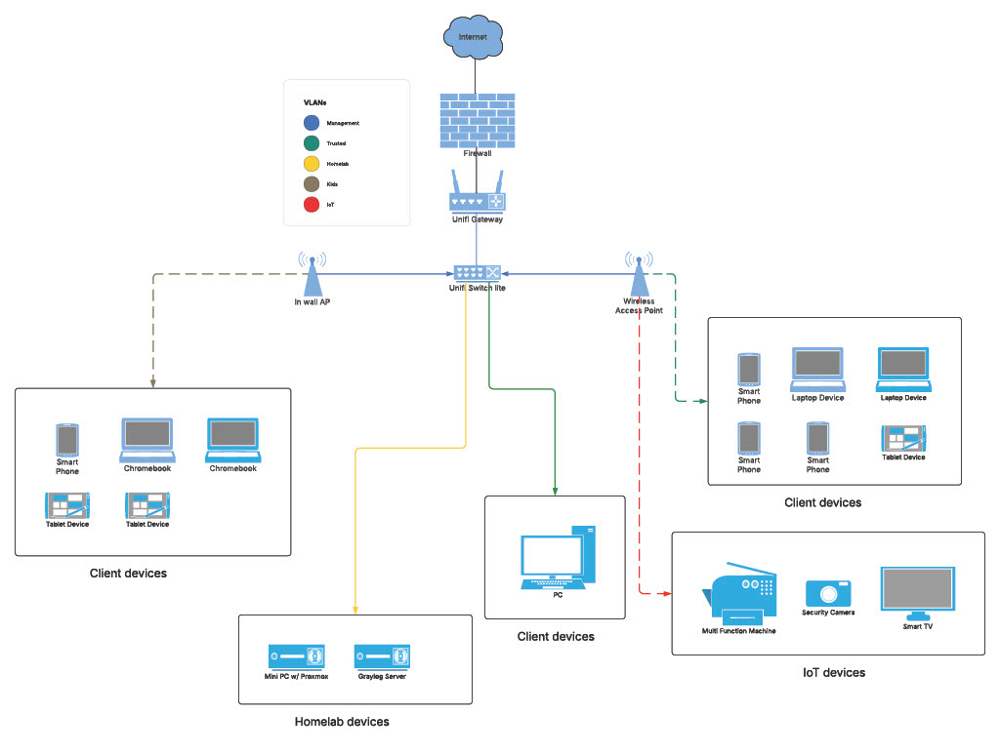

Unifi network stack with vlans & segmentation
Technologies: Unifi Gateway, Access Points and Switches
Problem / Goal
Upgrade home network infrastructure for better performance and security.
Implementation
Configured Unifi gateway and switches to create multiple VLANs for
segmenting traffic (e.g., IoT, guest, personal).
Tested connectivity, DHCP assignment, and security isolation between
VLANs.
Network Diagram

Screenshots

Challenges & Solutions
Encountered routing issues between VLANs; resolved by adjusting firewall
rules.
Skills Demonstrated
- Network segmentation
- VLAN configuration
- Firewall rules
- Network troubleshooting
Self-Hosted Modded Minecraft Server
Technologies: Proxmox, Ubuntu Server, Java, wget,
systemd, SSH, Modded Minecraft Server (Paper), Minekube.com (free tier)
Problem / Goal
Host a Minecraft server at home to practice working with servers, learn
how game servers operate, and make it accessible to friends without
needing router port forwarding.
Implementation
Set up an Ubuntu Server VM as the host environment. Installed required
packages such as wget for downloading files:
sudo apt install wget
Installed the Java Runtime Environment:
sudo apt install default-jre
Checked installation with java -version.
Created a dedicated directory and moved the downloaded Minecraft server
jar:
mkdir minecraft-server
mv server.jar minecraft-server
Renamed the file for easier version management:
mv server.jar minecraft_server_1.21.10.jar
Ran the server to generate configuration files:
java -jar minecraft_server_1.21.10.jar --nogui
Edited eula.txt to accept the EULA:
nano eula.txt
Modded Server Integration
Installed a modded version of the server to integrate with a third-party
service. This provided a public endpoint that friends could use to join
the server without needing to port forward.
Challenges & Solutions
One major challenge was figuring out how to allow friends to access the
server from outside the network. Instead of configuring router port
forwarding, I used Minekube.com's free tier, which
provided a simple public endpoint that tunneled traffic directly to my
Minecraft server.
I also encountered issues with the server shutting down when closing the
terminal. This was solved by creating a systemd service so
the server runs in the background and restarts automatically.
Fixed additional permission problems that prevented the
minecraft.service from launching in the correct directory.
Skills Demonstrated
- Linux server administration
- Command line and package management
- Directory and file management (mv, mkdir, nano)
- Java application management
- Configuration file editing
- Systemd service creation & troubleshooting
- Using Minekube.com tunneling to avoid port forwarding
- Network access troubleshooting